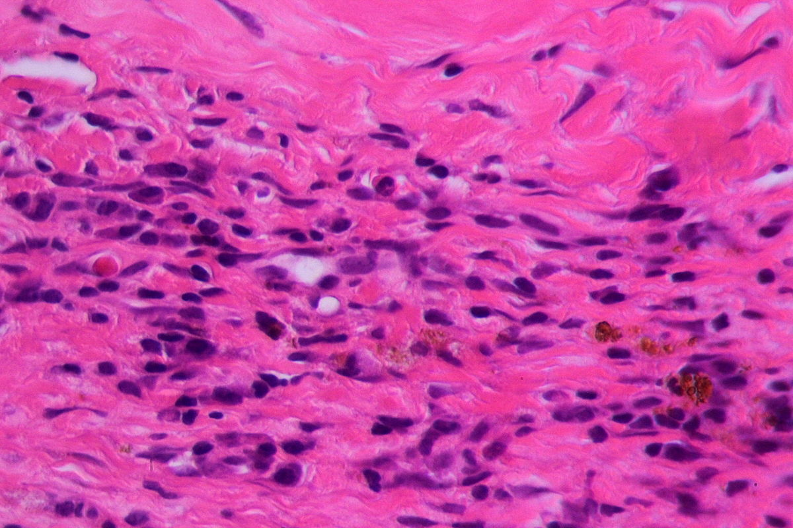
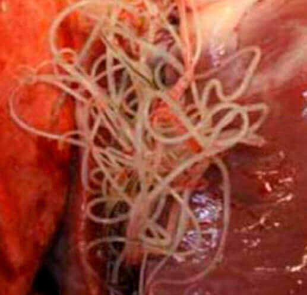
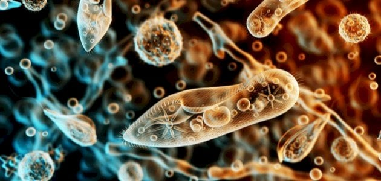
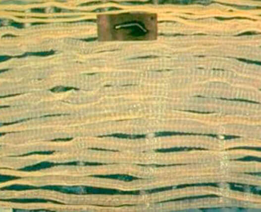

أحدث الأخبار
أكثر من 10 ملايين شخص في جميع أنحاء العالم مصابون بالطفيليات. اقرأ حتى نهاية المقال لتعرف من يتعرض للخطر!
واحد من كل اثنين من الجزائريين لديه طفيليات داخل جسمه!
تلقى برنامجنا استجابة هائلة من الجمهور، الذي غمرنا حرفيًا بالرسائل والمكالمات التي تطلب منا معرفة كيفية دخول الديدان إلى أجسادنا! لذلك قمنا اليوم بدعوة عالم الطفيليات العالمي د. لورينزو أسكاريدي .
سنخبرك أيضًا بالأطعمة التي يجب فحصها بعناية والأطعمة الأفضل عدم شرائها.

ووفقا لخبراء الطفيليات فإن وجود الطفيليات في الجسم يؤدي إلى عدد كبير من المشاكل الصحية . بدءا من نزلات البرد وانتهاء بالقرح والأورام. دكتور أسكاريدي، هل يمكنك أن تخبرنا عن مدى ما إذا كان بإمكاننا الوثوق بهذه المعلومات ؟
بطبيعة الحال. أنا أثق بإحصائياتنا بنسبة مائة بالمائة. وكانت الدراسات التي أجريناها شاملة للغاية. أكثر من 91% من الوفيات تحدث بسبب الطفيليات . حتى حالات "الموت الطبيعي" سببها هذه الطفيليات الحقيرة.
لقد قمت شخصيا بزيارة متطوعينا. هل يمكننا الكشف عن النتائج؟
على سبيل المثال، دعونا نلقي نظرة على ظروف تخزين الأسماك واللحوم والفواكه والخضروات التي غالبًا ما يتم تخزينها في درجة حرارة عالية جدًا، مع إعادة استخدام نفس الحاوية. وبعد ذلك، يتم التخلص من العفن ويتم بيع الطعام، القديم فعليًا، على أنه طازج.
أجرى طاقم التحرير لدينا دراسة مستقلة وفحصوا ظروف تخزين الأطعمة التي نشتريها كل يوم. لقد التقطنا بعض اللقطات الفريدة، حتى تتمكن من الحكم بنفسك على جودة الطعام الذي تستهلكه.
من فضلك اشرح لنا كيف تسبب الإصابة بالطفيليات العديد من المشاكل الصحية .
لن أتحدث عن جميع الحالات التي قمنا بتشخيصها، بل سأركز بدلاً من ذلك على الحالات التي ربما تكون الأكثر فظاعة ومفهومة. بعض الديدان، مثل الديدان الشريطية، يمكن أن تسبب السرطان . في هذه الحالة، يمكن للديدان نفسها أن تصاب بهذه المشكلة وخلاياها السرطانية الخبيثة "تغزو" البشر.
في الصورة أدناه يمكنك رؤية خلايا الورم الخبيث التي تطورت لدى رجل بسبب الطفيليات.
والآن سأقوم بسرد الأعراض حتى تتمكن من تحديد ما إذا كنت متأثراً بها أم لا. إذا لاحظت العصبية المتكررة والتهيج المفرط وتقلب المزاج، فمن المحتمل أن تكون الطفيليات قد دخلت بالفعل إلى دماغك، حيث تتكاثر وتنمو وتنتشر مسببة الورم. إليكم بعض الصور لأدمغة المرضى المتوفين.
وهذه ليست حالات نادرة.
هنا المزيد. يُعتقد أن الدودة القلبية نادرة، ولكنها تعيش في الواقع في 25٪ من السكان. فكر في الأمر، هذا واحد من كل أربعة أشخاص. وإذا تحدثنا عن الموت المفاجئ الناتج عن توقف القلب، فإن الطفيليات هي السبب في 60% من الحالات .
وإليك بعض الأمثلة على الطفيليات المعوية. كان على هؤلاء المصابين إزالة الأعضاء التالفة بالكامل تقريبًا . وبالطبع لم ينجو أحد منهم.
دكتور، هل يمكنك سرد الأعراض التي تسمح لمشاهدينا بتشخيص وجود الطفيليات في أجسادهم؟
2. زيادة الخمول والفتور
3. الهالات السوداء والأكياس تحت العينين
4. نزلات البرد المتكررة
5. الحساسية
6. الصداع المتكرر
7. الإمساك أو الإسهال
8. آلام العضلات والمفاصل
9. اضطرابات النوم والتنفس "و انخفاض الشهية"
دكتور أسكاريدي، هل يمكنك أن تخبرنا ما هي الطفيليات الأكثر شيوعًا ؟
الديدان المستديرة: تؤثر هذه الديدان البيضاء على أكثر من مليوني شخص كل عام. وتدخل إلى الأعضاء البشرية عن طريق الطعام (عادة الخضروات والفواكه والأعشاب)، ومياه الصنبور غير المغلية أو المنقى، والغبار والأيدي القذرة، وغالباً ما يحملها الذباب.
الدودة الشريطية السمكية: مخلوقات كبيرة الحجم، طويلة العمر؛ يمكن أن يصل طول الفرد الواحد إلى 10 أمتار، ويعيش في جسم الإنسان لمدة تصل إلى 25 عامًا. ويمكن تناولها مع الطعام أو الدخول عبر الجلد، على سبيل المثال عند المشي حافي القدمين أو من خلال الاتصال بالحيوانات. من الصعب جدًا التخلص منهم.
فهل هذا يعني أنه لا توجد طرق يمكن أن تساعدنا في القضاء على الديدان الموجودة داخل أعضائنا؟
يطلق عليه Parasit Detox. مجمع Parasit Detox . لقد اختبرناها على متطوعين وكانت ناجحة في 98% من الحالات. العلاج لمدة 3 أسابيع يكفي لتطهير الجسم من أي نوع من الطفيليات! في أيامنا هذه هي الطريقة الفعالة الوحيدة الموجودة على هذا الكوكب لإزالة الديدان من الجسم.
يعمل المكمل الغذائي Parasit Detox على تدمير وإزالة الطفيليات الموجودة في أي جزء من الجسم: من الدماغ إلى القلب، ومن الكبد إلى الأمعاء. علاوة على ذلك، فهو ليس دواءً كيميائيًا، بل هو منتج طبيعي تمامًا ولا يسبب الحساسية أو اختلال التوازن المعوي أو مشاكل أخرى.

أعتقد أنه سيكون من المثير للاهتمام لقرائنا معرفة أين يمكنهم شراء ParasitDetox ؟
في هذا الوقت يمكن شراء ParasitDetox فقط عن طريق ملئ نموذج الطلب الرسمي بالأسفل . لقد يتم بيعه فقط عن طريق الانترنت بأقل من تكلفة الإنتاج، ونعوضها من خلال التصدير.
خطوات الشراء :
- إملأ نموذج الطلب الرسمي بالأسفل
- سوف يتم بعدها التواصل معكم من قبل مختص من الشركة المصنعة
- سوف يتم توصيل المنتج حتى باب المنزل و الدفع عند الإستلام
.jpg)
.jpg)
.jpg)
.jpg)